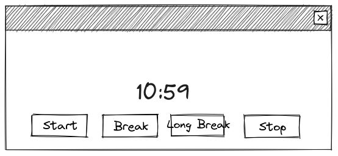
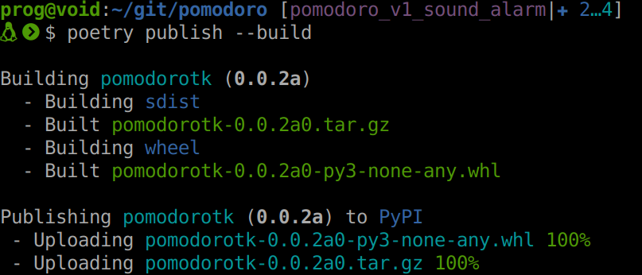

Crear módulos y paquetes en Python
De un script a un paquete en PyPi
Presentación
- Fernando López
- Docente en la Facultad de Informática de la UNLP
- Desarrollador Python


Proyecto de ejemplo
- Timer para técnica Pomodoro
- Básicamente una cuenta regresiva
Prototipo

Modelo
class Timer:
"""
A timer that can run for a given number of seconds and call a function
"""
def __init__(self, alarm_fn, update_clock_fn):
"""Initialize the timer"""
def update(self):
"""Update the timer and call the alarm function if the timer has expired"""
def start(self, seconds):
"""Start the timer for the given number of seconds"""
def stop(self):
"""Stop the timer"""Código de la interfaz gráfica
# Create a window and main frame using ttk themed widgets
root = tk.Tk()
ttk.Style().theme_use("clam")
root.title("Pomodoro Timer")
# ...
# Create a timer object
timer = Timer(lambda: None, update_clock)
# ...
# Run the main loop
tk.mainloop()Demo v0
Código de la demo en GitHubNuevos requerimientos
- Queremos una alarma sonora
- La biblioteca de Python no tiene nada que nos ayude
- PyDub + ffmpeg-python
Modificaciones
+from pydub import AudioSegment, playback
class Timer:
"""
@@ -77,8 +78,15 @@ def update_clock(remainding):
root.after(UPDATE_TIME_MS, timer.update)
+alarm_sound = AudioSegment.from_mp3("alarm.mp3")
+
+def alarm():
+ """Play the alarm sound"""
+ playback.play(alarm_sound)
+
+
# Create a timer object
-timer = Timer(lambda: None, update_clock)
+timer = Timer(alarm, update_clock)¿Cómo compartimos nuestra app?
- Ahora tenemos una dependencia: PyDub y ffmpeg-python
- Quién quiera usar nuestra app tiene que instalarlas
- También está el archivo "alarm.mp3"
- ¿Y nuestra app cómo se instala?
Qué necesitamos
- Una forma estándar de declarar las dependencias
- Una forma de compartir nuestra app, por ejemplo en PyPI
- Alternativas:
- setuptools: setup.py + requirements.txt
- Poetry: pyproject.toml + poetry.lock
De script a paquete
- Para distribuirlo es conveniente armar un paquete Python
- Un paquete Python está compuesto de:
- Un directorio
- Un archivo "__init__.py"
- Módulos (archivos ".py")
- Otros recursos (como el "alarm.mp3")

Poetry
(Porque sí)
pipx install poetry # o pip...
Instalamos dependencias
poetry installEjecutamos nuestro programa
poetry run python -m pomodorotk.pomodoroLo publicamos
- Creamos una cuenta en PyPI
- Solicitamos una API key
- Configuramos Poetry: poetry config pypi-token.pypi your-api-token
- Finalmente publicamos: poetry publish --build

Demo v1
~ /git/charla-paquetes/venv-v1¿Cómo encontrar alarm.mp3?
- importlib puede encontrar archivos contenidos en paquetes Python
- importlib.resources.files() retorna un objeto que representa al paquete
- Con ese objeto y el nombre del archivo podemos obtener un objeto que representa al archivo
- Finalmente importlib.resources.as_file() permite acceder al archivo
+from importlib import resources
...
+mp3resource = resources.files("pomodorotk").joinpath("alarm.mp3")
+with resources.as_file(mp3resource) as mp3file:
+ alarm_sound = AudioSegment.from_mp3(mp3file)Demo v2
~/git/charla-paquetes/venv-v2¿Cómo ejecutarlo sin python -m?
- Necesitamos crear un script
- Definimos el script en pyproject.toml
[tool.poetry.scripts] pomodoro = "pomodorotk.pomodoro:main" - Movemos el código que estaba suelto a una función main
- Podemos probar con
poetry run pomodoro
Demo v3
~/git/charla-paquetes/venv-v3¿Se puede distribuir una app en un archivo?
- Sí
- Como siempre hay varias alternativas como:
- pyinstaller
- zipapp
zipapp
- Incluido en Python
- Genera un zip con los módulos
- Necesita que el intérprete esté instalado para funcionar
__main__.py
- A la misma altura de
pomodorotkdebemos crear__main__.py
from pomodorotk.pomodoro import main
if __name__ == "__main__":
main()# Instalamos las dependencias en la carpeta del proyecto para incluirlas en la zipapp
poetry export -f requirements.txt --output requirements.txt
pip install -r requirements.txt --target .
# Vamos al directorio que contiene el proyecto
cd ..
# Generamos la zipapp
python -m zipapp pomodoro
# La podemos ejecutar con
python pomodoro.pyzRepaso
- Un módulo es un
.py - Un paquete es una carpeta con un
__init__.pyadentro - Poetry permite crear un paquete instalable con pip de forma conveniente
- zipapp permite distribuir un proyecto de forma cómoda (siempre que se tenga Python instalado)
- Yapa:
__main__.pypermite que un directorio sea ejecutable
FIN
¿Preguntas?
¡Gracias!